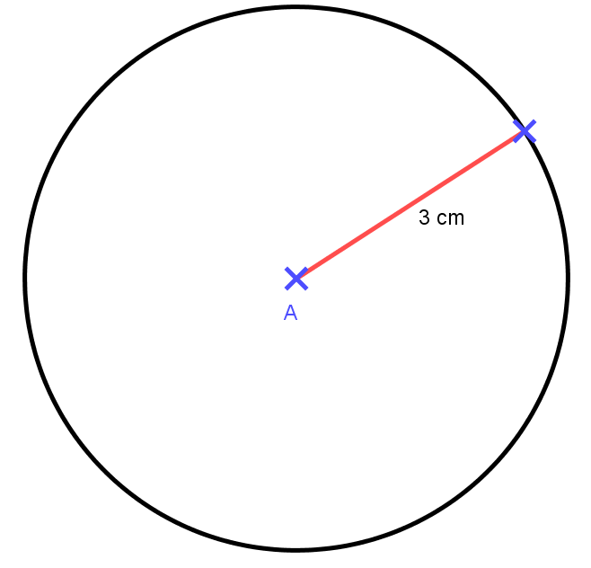
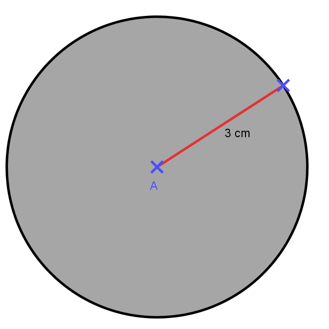
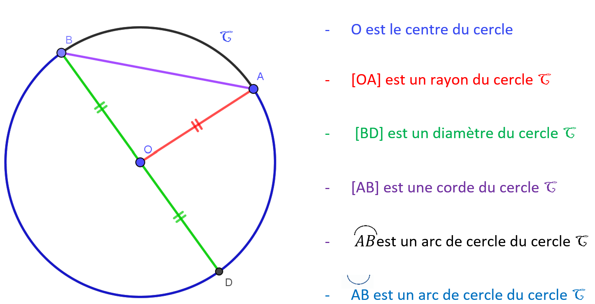

Chapitre 8 : Cercles et disques
I. Définitions — 1) Le cercle
Définition : Un cercle est formé de tous les points situés à la même distance d'un point appelé centre.
Définition : Cette distance est appelée le rayon du cercle.
Remarque : Le centre du cercle n'est pas un point du cercle.
Exemple : Cercle de centre A et de rayon 3 cm

I. Définitions — 2) Le disque
Définition : Un disque est formé de tous les points situés sur un cercle et à l'intérieur du cercle.
C'est une surface.
Attention : Il ne faut pas confondre le cercle (qui est la ligne) et le disque (qui est la surface).
Exemple : Disque de centre A et de rayon 3 cm

II. Vocabulaire
Sur la figure ci-dessous :

II. Vocabulaire — 1) Le rayon
Définition : Un rayon est un segment qui relie le centre du cercle à un point du cercle.
Remarque : Le mot "rayon" peut désigner :
- Le segment [OA]
- La longueur OA
Propriété : Tous les rayons d'un même cercle ont la même longueur.
II. Vocabulaire — 2) Le diamètre
Définition : Un diamètre est un segment qui relie deux points du cercle en passant par le centre.
Remarque : Le mot "diamètre" peut désigner :
- Le segment [BD]
- La longueur BD
Propriété : Le diamètre d'un cercle est égal au double du rayon.
Si on note r le rayon et d le diamètre, on a : d = 2 × r
Propriété : Le centre d'un cercle est le milieu de tous ses diamètres.
II. Vocabulaire — 3) La corde
Définition : Une corde est un segment qui relie deux points du cercle.
Remarque : Un diamètre est une corde particulière : c'est la corde qui passe par le centre du cercle. Le diamètre est la plus grande corde du cercle.
II. Vocabulaire — 4) L'arc de cercle
Définition : Un arc de cercle est une portion de cercle délimitée par deux points.
Remarque : Deux points A et B d'un cercle délimitent toujours deux arcs de cercle différents (sauf si A et B sont diamétralement opposés, auquel cas les deux arcs sont égaux : on parle de demi-cercle).
Notation : On note les deux arcs en plaçant le symbole au-dessus des lettres :
- AB désigne le grand arc
- AB désigne le petit arc
III. Construction d'un cercle — 1) Utilisation du compas
Méthode : Pour tracer un cercle de centre O et de rayon 3 cm :
- Écarter le compas pour que la distance entre la pointe et la mine soit égale à 3 cm (utiliser une règle graduée)
- Placer la pointe du compas sur le point O (le centre)
- Faire tourner le compas autour du point O en gardant le même écartement
- Tracer le cercle complet
III. Construction d'un cercle — 2) Programme de construction
Définition : Un programme de construction est une liste d'instructions qui permet de construire une figure géométrique de manière précise.
Exemple :
Programme de construction :
- Tracer un segment [AB] de longueur 5 cm.
- Tracer le cercle de centre A et de rayon 4 cm.
- Tracer le cercle de centre B et de rayon 3 cm.
- Les deux cercles se coupent en deux points C et D.
IV. Appartenance à un cercle
Propriété : Un point M appartient au cercle de centre O et de rayon r si et seulement si la distance OM est égale à r.
Exemple :
Soit un cercle de centre O et de rayon 5 cm. On mesure les distances suivantes :
- Si OA = 5 cm alors le point A appartient au cercle
- Si OB = 3 cm alors le point B est à l'intérieur du cercle (dans le disque)
- Si OC = 7 cm alors le point C est à l'extérieur du cercle
Propriété : Si deux points A et B appartiennent à un même cercle de centre O, alors : OA = OB
Exemple d'utilisation :
Les points A, B et C appartiennent au cercle de centre O et de rayon 4 cm.
On sait que OA = 4 cm.
Quelle est la longueur OB ?
On sait que OA = 4 cm.
Quelle est la longueur OB ?
Réponse : Comme A et B appartiennent au même cercle de centre O, on a : OA = OB = 4 cm.